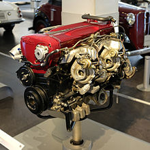

Nissan RB engine
The RB engine is an oversquare 2.0–3.0 L straight-6 four-stroke gasoline engine from Nissan, produced from 1985 to 2004, and will be continuing production in 2019, after a 15 year hiatus. The RB followed the 1983 VG-series V6 engines to offer a full, modern range in both straight or V layouts.
Lisa info saab leida wikipeedias

Bore and stroke
All Nissan engines follow a naming convention, identifying the engine family (in this case, RB), displacement, features present—see the list of Nissan engines for details.
The stock dimensions for the Nissan RB Engine
- RB20 - 2.0 L (1,998 cc), bore x stroke: 78 mm × 69.7 mm (3.07 in × 2.74 in)
- RB24 - 2.4 L (2,428 cc), bore x stroke: 86 mm × 69.7 mm (3.39 in × 2.74 in)
- RB25 - 2.5 L (2,498 cc), bore x stroke: 86 mm × 71.7 mm (3.39 in × 2.82 in)
- RB26 - 2.6 L (2,568 cc), bore x stroke: 86 mm × 73.7 mm (3.39 in × 2.90 in)
- RB30 - 3.0 L (2,962 cc), bore x stroke: 86 mm × 85 mm (3.39 in × 3.35 in)
- "D" indicates a dual overhead cam as opposed to a single overhead cam
- "E" indicates the individual engine ports are electronically fuel-injected 'single-cam'
- "S" indicates the engine is carbureted
- "T" indicates the engine has a factory installed turbocharger
- "TT" indicates the engine has factory installed twin turbochargers
- "P" indicates the engine runs on LPG (liquefied petroleum gas)
| |
Duration |
Lift |
| Camshaft |
Intake |
Exhaust |
Intake |
Exhaust |
| RB26DETT |
240° |
236° |
8.58 mm |
8.28 mm |
| RB26DETT |
240° |
236° |
8.58 mm |
8.28 mm |
RB26DETT (2.6L I6 TT)